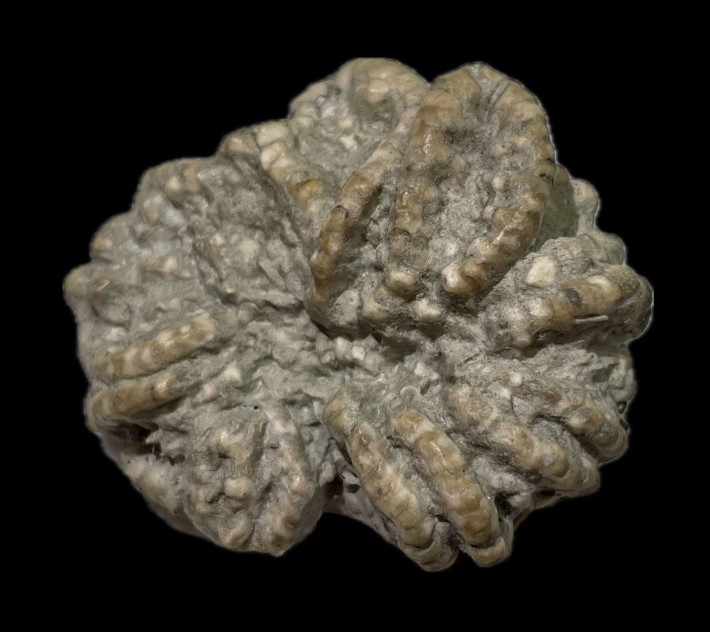
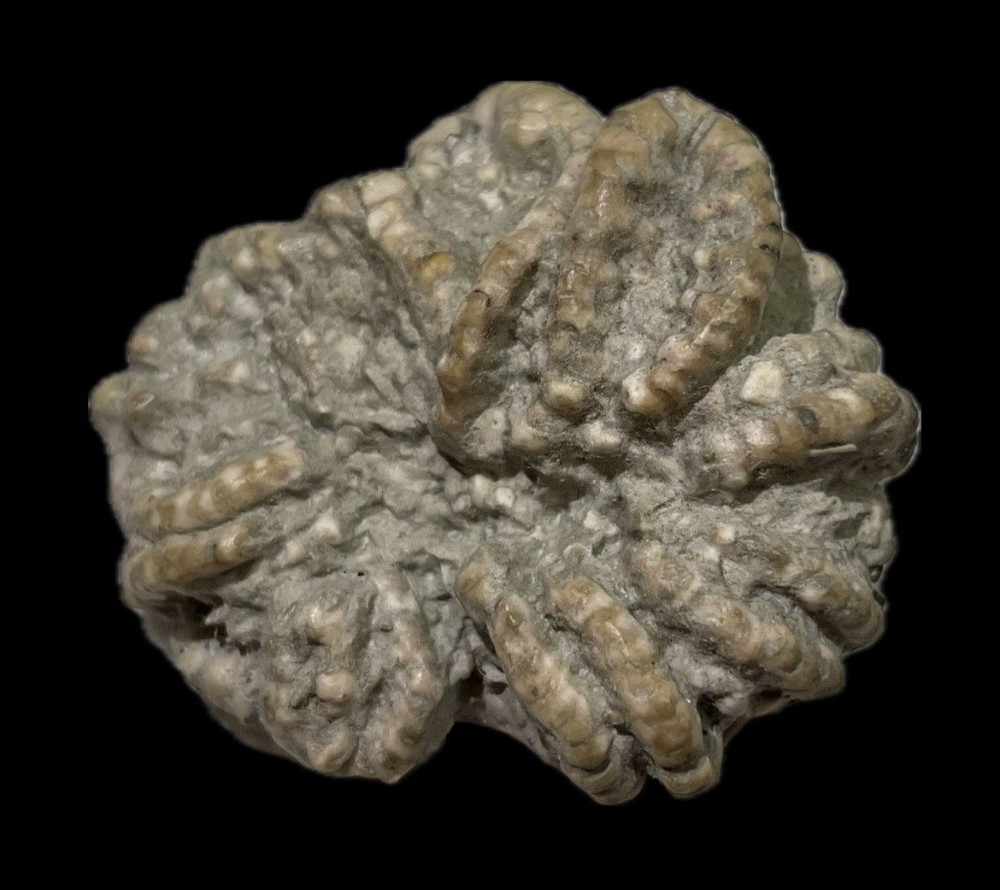

Euonychocrinus simplex
Pennsylvanian
LaSalle Limestone, Bond Formation
Pontiac, Illinois, USA
Size: 4 cm across
This crinoid is one of two unusual Flexible species found in the Pontiac crinoid fauna and closely-related to the familiar Mississippian flexibles such as Taxocrinus. Its most interesting feature is the secondary ramules given off by the tertibrachials, which form a biendotomous branching pattern in the upper-half of the crown.
 
